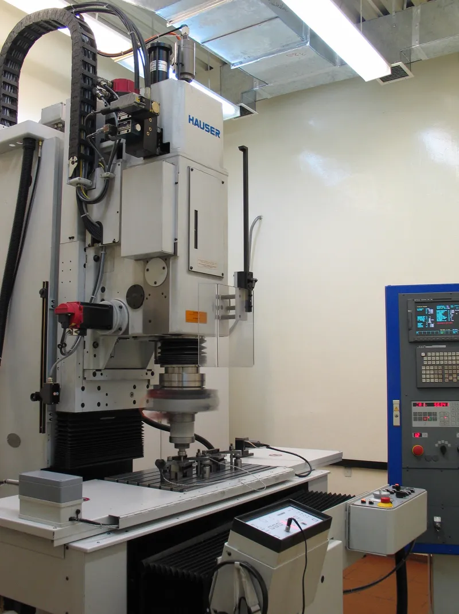

Общество с ограниченной ответственностью «УАЗ-ТЕХИНСТРУМЕНТ» – дочернее предприятие Ульяновского автомобильного завода, входящего в структуру автомобильного концерна Sollers. Изготавливает штампы и технологическую оснастку, опираясь на многолетние традиции, серьезный опыт, высококвалифицированных специалистов и производственные мощности.

«УАЗ-ТЕХИНСТРУМЕНТ» оказывает услуги для предприятий:
- машиностроения (автомобильного, железнодорожного, сельскохозяйственного);
- авиастроения;
- судостроения;
- оборонной промышленности;
- приборостроения и по производству высокотехнологичного оборудования;
- сварочных и кузнечно-прессовых;
- автокомпонентной отрасли;
- энергетического комплекса;
- заводов штампов и пресс-форм.
На «УАЗ-ТЕХИНСТРУМЕНТ» организован оптимальный производственный цикл, включающий следующие этапы:
- Проектирование штампов, математическое моделирование средств оснащения.
- Разработка технологии изготовления оснастки и управляющих программ для станков с числовым программным управлением (ЧПУ).
- Изготовление штампов (вырубных, пробивных, гибочных, формовочных и вытяжных для холодной и горячей объемной штамповки), технологической оснастки и приспособлений (сварочных, сборочных, контрольных).
- Контроль и анализ с применением измерительной техники FARO.
«УАЗ-ТЕХИНСТРУМЕНТ» имеет многолетний опыт проектирования и производства оснастки. Парк высокоточного оборудования «УАЗ-ТЕХИНСТРУМЕНТ» позволяет обрабатывать штампы любой группы сложности на основе математических моделей, созданных собственной службой математического моделирования и разработки управляющих программ для станков с числовым программным управлением (ЧПУ).Современное компьютерное оборудование и программное обеспечение; система автоматизированного проектирования NX Unigraphics обеспечивают интеграцию всех аспектов процессов: от проектирования до производства в единое высокотехнологичное решение для создания полного цифрового макета продукции. У предприятия есть опыт модернизации штампов на импортные детали Ford, Skoda, Renault.
This site was created with the Nicepage